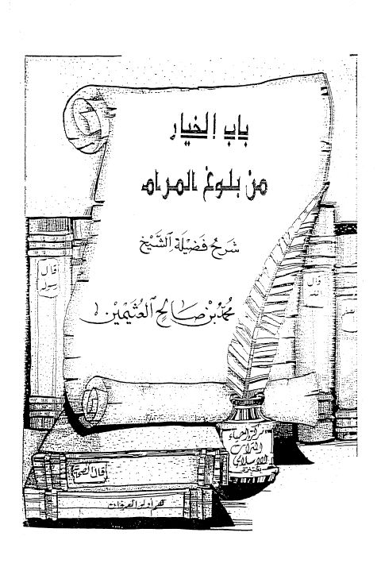

باب الخيار من بلوغ المرام- بخط اليد
Authors: محمد بن صالح العثيمين
Publishers: مركز إحياء التراث الإسلامي
Download Downloads need an internet connection.
- Country
- مكة المكرمة، السعودية
- Edition
- 1
- Volumes
- 1
- Pages
- 177
- Type
- كتاب
- Category
- الحديث وعلومه
- Subcategory
- المسانيد الأخرى والجوامع
Description
**▫️ العنوان: باب الخيار من بلوغ المرام- بخط اليد** ▪️ المؤلف: #محمد_بن_صالح_العثيمين ▫️ الناشر: #مركز_إحياء_التراث_الإسلامي ▪️ بلد النشر: مكة المكرمة، #السعودية ▫️ الطبعة: 1 ▪️ عدد الأجزاء: 1 ▫️ الصفحات: 177 ▪️ نوع الوعاء: #كتاب ▫️ التصنيف الرئيسي: #الحديث_وعلومه ▪️ التصنيف الفرعي: #المسانيد_الأخرى_والجوامع ۪